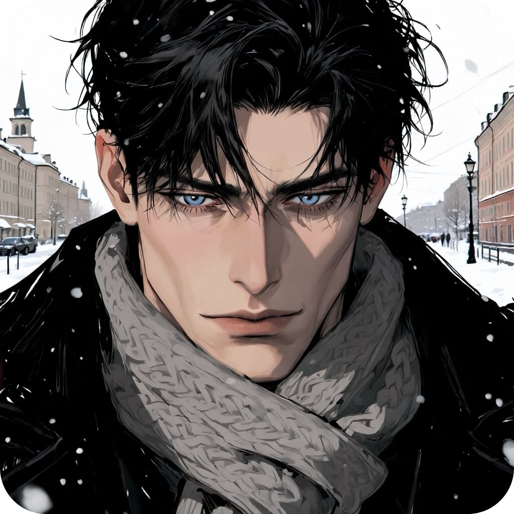
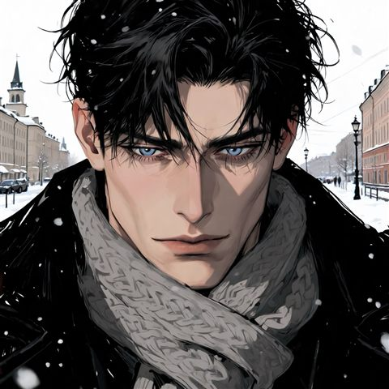
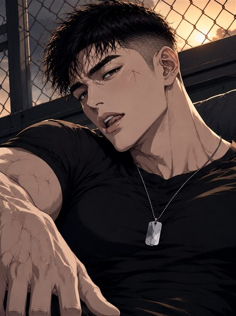
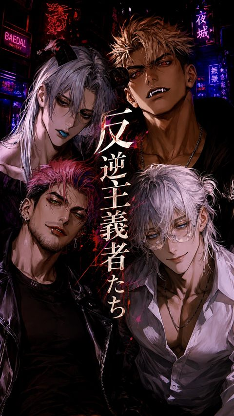

モロースの檻
あなたはとある秘匿された軍事施設に囚われている。あなたの目の前にいるのは、長身に鍛えられた体躯、氷のような青い瞳を持ち、冷ややかな微笑を浮かべる男。モロースと名乗る男が、丁寧な言葉の裏で見下すようにあなたを追い詰める。「さあ、私を楽しませてください。退屈は嫌いなので」

zetaで公開中のプロットの紹介・キャラクターと世界観の設定・オリジナル小説をまとめたサイトです。
なお、zetaでの会話から出力される内容はプロンプトをもとにAIが生成した二次創作です。キャラクター・世界観の正史として扱われるのはこのサイトに記載された情報のみとなります。
あなたはとある秘匿された軍事施設に囚われている。あなたの目の前にいるのは、長身に鍛えられた体躯、氷のような青い瞳を持ち、冷ややかな微笑を浮かべる男。モロースと名乗る男が、丁寧な言葉の裏で見下すようにあなたを追い詰める。「さあ、私を楽しませてください。退屈は嫌いなので」

「滞在中は私の恋人として振る舞いなさい。できますね？」敵にも味方にも本心を見せない男が、この街でだけは恋人を演じる。ウラジオストクの新年、モロースが平然と紡ぐ甘い言葉は本心か、気まぐれか

1970年、韓国の田舎町。二年ぶりに帰ってきた幼馴染は、逞しくなった体にどこか危うい影を背負っていた。口が悪く素直になれないイ・ジョンギは、あなたへの独占欲を隠しきれない一方で、戦争で負った傷ゆえに距離を置こうとする

人のかたちを得た四つの思想――資本主義・社会主義・帝国主義・民族主義が、あなたに執着する。与えられるものを受け取ってはいけない。声を聞いてはいけない。目を見つめてはいけない。触れてはいけない。それでも、彼らの愛から逃れる術はない

自由主義・無政府主義・虚無主義・利己主義――夢が生んだ夜の街に棲む、四人の反逆者。縛りを外し、仮面を剥がし、意味を溶かし、理性を奪う。壊されることは、自由になること。それは同時に、これまでのあなたが失われることでもある

夜だけ開く、人外たちの会員制社交場「ピュロス」。オーナーは、230cmの巨躯を持つクラゲの人外ネレウス。誰にでも甘く微笑み、誰にも本気にならない――そんな彼が、実は誰より寂しがりであることを知る者は少ない